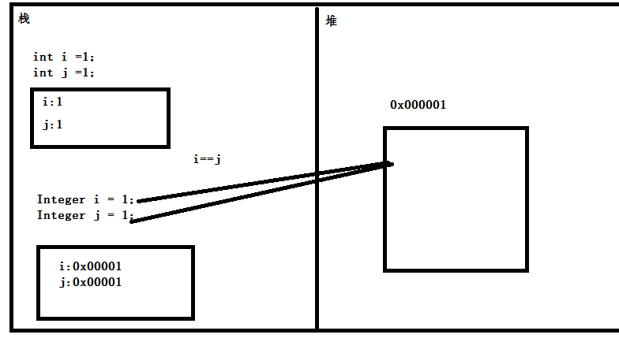
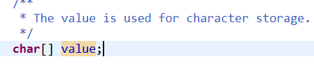
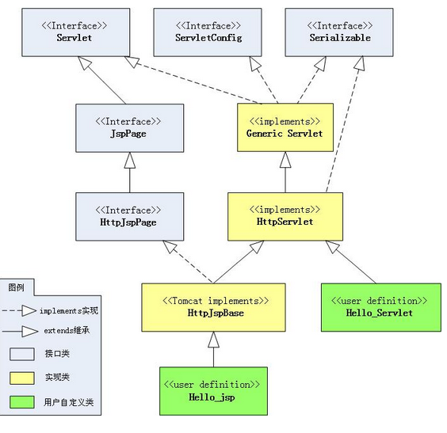
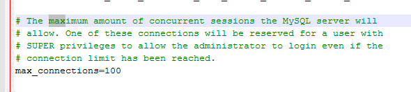
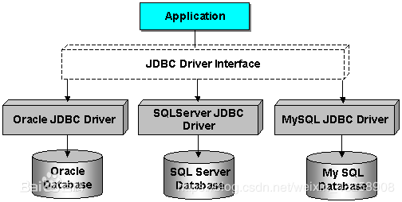
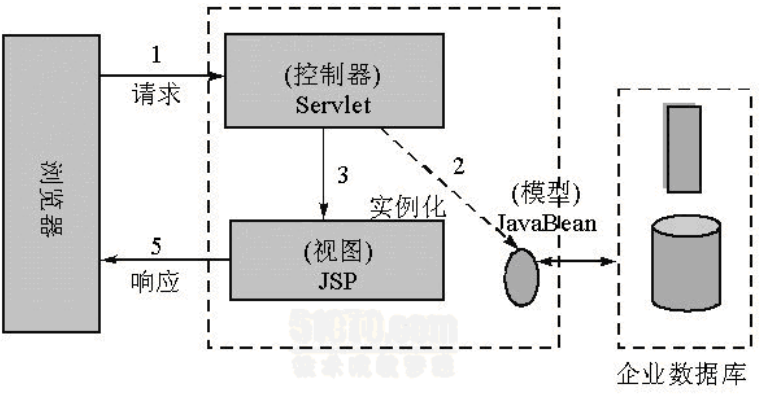

JAVA基础部分
1.Java中的String，StringBuilder，StringBuffer三者的区别
执行速度：StringBuilder > StringBuffer > String
String：适用于少量的字符串操作的情况
StringBuilder：适用于单线程下在字符缓冲区进行大量操作的情况
StringBuffer：适用多线程下在字符缓冲区进行大量操作的情况
2.Hashtable和HashMap的区别：
a) 继承不同。
public class Hashtable extends Dictionary implements Map
public class HashMap extends AbstractMap implements Map
b) Hashtable中的方法是同步的，而HashMap中的方法在缺省情况下是非同步的。在多线程并发的环境下，可以直接使用Hashtable，但是要使用HashMap的话就要自己增加同步处理了。
c) Hashtable 中， key 和 value 都不允许出现 null 值。 在 HashMap 中， null 可以作为键，这样的键只有一个；可以有一个或多个键所对应的值为 null 。当 get() 方法返回 null 值时，即可以表示 HashMap 中没有该键，也可以表示该键所对应的值为 null 。因此，在 HashMap 中不能由 get() 方法来判断 HashMap 中是否存在某个键， 而应该用 containsKey() 方法来判断。
d) 两个遍历方式的内部实现上不同。Hashtable、HashMap都使用了Iterator。而由于历史原因，Hashtable还使用了Enumeration的方式 。
e) 哈希值的使用不同，HashTable直接使用对象的hashCode。而HashMap重新计算hash值。
f) Hashtable和HashMap它们两个内部实现方式的数组的初始大小和扩容的方式。HashTable中hash数组默认大小是11，增加的方式是old*2+1。HashMap中hash数组的默认大小是16，而且一定是2的指数。
注： HashSet子类依靠hashCode()和equal()方法来区分重复元素。 HashSet内部使用Map保存数据，即将HashSet的数据作为Map的key值保存，这也是HashSet中元素不能重复的原因。而Map中保存key值的,会去判断当前Map中是否含有该Key对象，内部是先通过key的hashCode,确定有相同的hashCode之后，再通过equals方法判断是否相同。
3.乐观锁和悲观锁
悲观锁
总是假设最坏的情况，每次去拿数据的时候都认为别人会修改，所以每次在拿数据的时候都会上锁，这样别人想拿这个数据就会阻塞直到它拿到锁（共享资源每次只给一个线程使用，其它线程阻塞，用完后再把资源转让给其它线程）。传统的关系型数据库里边就用到了很多这种锁机制，比如行锁，表锁等，读锁，写锁等，都是在做操作之前先上锁。Java中synchronized和ReentrantLock等独占锁就是悲观锁思想的实现。
乐观锁
总是假设最好的情况，每次去拿数据的时候都认为别人不会修改，所以不会上锁，但是在更新的时候会判断一下在此期间别人有没有去更新这个数据，可以使用版本号机制和CAS算法实现。乐观锁适用于多读的应用类型，这样可以提高吞吐量，像数据库提供的类似于write_condition机制，其实都是提供的乐观锁。在Java中java.util.concurrent.atomic包下面的原子变量类就是使用了乐观锁的一种实现方式CAS实现的。
两种锁的使用场景
从上面对两种锁的介绍，我们知道两种锁各有优缺点，不可认为一种好于另一种，像乐观锁适用于写比较少的情况下（多读场景），即冲突真的很少发生的时候，这样可以省去了锁的开销，加大了系统的整个吞吐量。但如果是多写的情况，一般会经常产生冲突，这就会导致上层应用会不断的进行retry，这样反倒是降低了性能，所以一般多写的场景下用悲观锁就比较合适。
4.java的8种基本数据类型
四种整数类型(byte、short、int、long)、两种浮点数类型(float、double)、一种字符类型(char)、一种布尔类型(boolean)
类型转换： char–> 自动转换：byte–>short–>int–>long–>float–>double 强制转换：①会损失精度，产生误差，小数点以后的数字全部舍弃。②容易超过取值范围。
5.synchronized和Lock有什么区别？
①:synchronized是JVM层面实现的，java提供的关键字，Lock是API层面的锁。
②: synchronized不需要手动释放锁，底层会自动释放，
Lock则需要手动释放锁，否则有可能导致死锁
③:synchronized等待不可中断，除非抛出异常或者执行完成
Lock可以中断，通过interrupt()可中断
④: synchronized是非公平锁
Lock是默认公平锁，当传入false时是非公平锁
⑤:synchronized不可绑定多个条件
Lock可实现分组唤醒需要唤醒的锁
6.请说明一下JAVA中反射的实现过程和作用分别是什么？
JAVA语言编译之后会生成一个.class文件，反射就是通过字节码文件找到某一个类、类中的方法以及属性等。反射的实现主要借助以下四个类：Class：类的对象，Constructor：类的构造方法，Field：类中的属性对象，Method：类中的方法对象。
作用：反射机制指的是程序在运行时能够获取自身的信息。在JAVA中，只要给定类的名字，那么就可以通过反射机制来获取类的所有信息。
7.请你介绍一下map的分类和常见的情况
java为数据结构中的映射定义了一个接口java.util.Map;它有四个实现类,分别是HashMap Hashtable LinkedHashMap 和TreeMap.
Map主要用于存储健值对，根据键得到值，因此不允许键重复(重复了覆盖了),但允许值重复。
Hashmap 是一个最常用的Map,它根据键的HashCode值存储数据,根据键可以直接获取它的值，具有很快的访问速度，遍历时，取得数据的顺序是完全随机的。 HashMap最多只允许一条记录的键为Null;允许多条记录的值为 Null;HashMap不支持线程的同步，即任一时刻可以有多个线程同时写HashMap;可能会导致数据的不一致。如果需要同步，可以用 Collections的synchronizedMap方法使HashMap具有同步的能力，或者使用ConcurrentHashMap。
Hashtable与 HashMap类似,它继承自Dictionary类，不同的是:它不允许记录的键或者值为空;它支持线程的同步，即任一时刻只有一个线程能写Hashtable,因此也导致了 Hashtable在写入时会比较慢。
LinkedHashMap 是HashMap的一个子类，保存了记录的插入顺序，在用Iterator遍历LinkedHashMap时，先得到的记录肯定是先插入的.也可以在构造时用带参数，按照应用次数排序。在遍历的时候会比HashMap慢，不过有种情况例外，当HashMap容量很大，实际数据较少时，遍历起来可能会比 LinkedHashMap慢，因为LinkedHashMap的遍历速度只和实际数据有关，和容量无关，而HashMap的遍历速度和他的容量有关。
TreeMap实现SortMap接口，能够把它保存的记录根据键排序,默认是按键值的升序排序，也可以指定排序的比较器，当用Iterator 遍历TreeMap时，得到的记录是排过序的。
一般情况下，我们用的最多的是HashMap,在Map 中插入、删除和定位元素，HashMap 是最好的选择。但如果您要按自然顺序或自定义顺序遍历键，那么TreeMap会更好。如果需要输出的顺序和输入的相同,那么用LinkedHashMap 可以实现,它还可以按读取顺序来排列.
8.说说 synchronized 关键字和 volatile 关键字的区别？
volatile 是变量修饰符；synchronized 是修饰类、方法、代码段。
volatile 仅能实现变量的修改可见性，不能保证原子性；而 synchronized 则可以保证变量的修改可见性和原子性。
volatile 不会造成线程的阻塞；synchronized 可能会造成线程的阻塞。
volatile关键字是线程同步的轻量级实现。所以volatile性能肯定比synchronized关键字要好。但是volatile关 键字只能用于变量而synchronized关键字可以修饰方法以及代码块。
synchronized关键字在JavaSE1.6之后进 行了主要包括为了减少获得锁和释放锁带来的性能消耗而引入的偏向锁和轻量级锁以及其它各种优化之后执行 效率有了显著提升，实际开发中使用 synchronized 关键字的场景还是更多一些。
多线程访问volatile关键字不会发生阻塞，而synchronized关键字可能会发生阻塞 volatile关键字能保证数据的可见性，但不能保证数据的原子性。synchronized关键字两者都能保证。
volatile关键字主要用于解决变量在多个线程之间的可见性，而 synchronized关键字解决的是多个线程之间访 问资源的同步性。
9.hashCode 与 equals ？为什么重写equals时必须重写hashCode方法？
hashCode（）介绍
hashCode() 的作用是获取哈希码，也称为散列码；它实际上是返回一个int整数。这个哈希码的作用是确定该对象在哈希表中的索引位置。hashCode() 定义在JDK的Object.java中，这就意味着Java中的任何类都包含有hashCode() 函数。
散列表存储的是键值对(key-value)，它的特点是：能根据“键”快速的检索出对应的“值”。这其中就利用到了散列码！（可以快速找到所需要的对象）
为什么要有 hashCode
我们先以“HashSet 如何检查重复”为例子来说明为什么要有 hashCode： 当你把对象加入 HashSet 时，HashSet 会先计算对象的 hashcode 值来判断对象加入的位置，同时也会与其他已经加入的对象的 hashcode 值作比较，如果没有相符的hashcode，HashSet会假设对象没有重复出现。但是如果发现有相同 hashcode 值的对象，这时会调用 equals()方法来检查 hashcode 相等的对象是否真的相同。如果两者相同，HashSet 就不会让其加入操作成功。如果不同的话，就会重新散列到其他位置。（摘自我的Java启蒙书《Head first java》第二版）。这样我们就大大减少了 equals 的次数，相应就大大提高了执行速度。
通过我们可以看出：hashCode() 的作用就是获取哈希码，也称为散列码；它实际上是返回一个int整数。这个哈希码的作用是确定该对象在哈希表中的索引位置。hashCode() 在散列表中才有用，在其它情况下没用。在散列表中hashCode() 的作用是获取对象的散列码，进而确定该对象在散列表中的位置。
hashCode（）与equals（）的相关规定
- 如果两个对象相等，则hashcode一定也是相同的
- 两个对象相等,对两个对象分别调用equals方法都返回true
- 两个对象有相同的hashcode值，它们也不一定是相等的
- 因此，equals 方法被覆盖过，则 hashCode 方法也必须被覆盖
- hashCode() 的默认行为是对堆上的对象产生独特值。如果没有重写 hashCode()，则该 class 的两个对象无论如何都不会相等（即使这两个对象指向相同的数据）
10.面向对象的特征有哪些方面
有四大基本特征:封装、抽象、继承、多态
面向对象的封装性，即将对象封装成一个高度自治和相对封闭的个体，对象状态（属性）由这个对象自己的行为（方法）来读取和改变。
张三这个人，他的姓名等属性，要有自己提供的获取或改变的方法来操作。private name setName getName
抽象就是找出一些事物的相似和共性之处，然后将这些事物归为一个类，这个类只考虑这些事物的相似和共性之处，并且会忽略与当前主题和目标无关的那些方面，将注意力集中在与当前目标有关的方面。 就是把现实生活中的对象，抽象为类。
在定义和实现一个类的时候，可以在一个已经存在的类的基础之上来进行，把这个已经存在的类所定义的内容作为自己的内容，并可以加入若干新的内容，或修改原来的方法使之更适合特殊的需要，这就是继承。遗产继承
多态是指程序中定义的引用变量所指向的具体类型和通过该引用变量发出的方法调用在编程时并不确定，而是在程序运行期间才确定，即一个引用变量倒底会指向哪个类的实例对象，该引用变量发出的方法调用到底是哪个类中实现的方法，必须在由程序运行期间才能决定。
Object obj = new xxx();
UserDao userDao = new UserDaoJdbcImpl();
UserDao userDao = new UserDaoHibernateImpl();
靠的是父类或接口定义的引用变量可以指向子类或具体实现类的实例对象，而程序调用的方法在运行期才动态绑定，就是引用变量所指向的具体实例对象的方法，也就是内存里正在运行的那个对象的方法，而不是引用变量的类型中定义的方法。
原则：回答比较抽象问题的时候，要举例说明
11.有了基本数据类型，为什么还需要包装类型？
基本数据类型，java中提供了8中基本的数据类型。boolean int float等
包装类型：每一个基本的数据类型都会一一对应一个包装类型。
boolean —–>Boolean
Int ——–>Integer
装箱和拆箱
装箱：把基本的数据类型转换成对应的包装类型.
Integer .valueOf(1)
Integer i = 1;自动装箱，实际上在编译时会调用Integer .valueOf方法来装箱
拆箱：就是把包装类型转换为基本数据类型.基本数据类型 名称 = 对应的包装类型。
Integer i = 1;
int j = i;//自动拆箱//int j = i=intValue();手动拆箱
自动拆箱：实际上会在编译调用intValue
为什么：
Java是一个面向对象的语言，而基本的数据类型，不具备面向对象的特性。
null Integer—>null int—->0 用Integer和int分别表示Person这个类的ID
Max 最大值
min 最小值
缓存值:对象缓存,Integer i=1; integer j= 1;i ==j 常量池
12.说一下”==”和equals方法究竟有什么区别？
非常经典的一个面试题？先说清楚一个，再来说另一个？
==用来判断两个变量之间的的值是否相等。变量就可以分为基本数据类型变量，引用类型。
如果是基本数据类型的变量直接比较值而引用类型要比较对应的引用的内存的首地址。

equals 用来比较两个对象长得是否一样。判断两个对象的某些特征是否一样。实际上就是调用对象的equals方法进行比较。
13.讲一下String和StringBuilder的区别(final)？StringBuffer和StringBuilder的区别?
String 不可变 StringBuilder StringBuff 是可变的 StringBuffer是线程安全得多 StringBuilder不是线程安全的。
1.在java中提供三个类String StringBuillder StringBuffer来表示和操作字符串。字符串就是多个字符的集合。
String是内容不可变的字符串。String底层使用了一个不可变的字符数组(final char[])
String str =new String(“bbbb”);
而StringBuillder StringBuffer,是内容可以改变的字符串。StringBuillder StringBuffer底层使用的可变的字符数
组（没有使用final来修饰）

2.最经典就是拼接字符串。
1、String进行拼接.String c = “a”+”b”;
2、StringBuilder或者StringBuffer
StringBuilder sb = new StringBuilder(); sb.apend(“a”).apend(“b”)
拼接字符串不能使用String进行拼接，要使用StringBuilder或者StringBuffer。
3.StringBuilder是线程不安全的，效率较高，而StringBuffer是线程安全的，效率较低。
14.讲一下java中的集合?
Java中的集合分为value，key–vale(Conllection Map)两种。
存储值有分为List 和Set.
List是有序的，可以重复的。
Set是无序的，不可以重复的。根据equals和hashcode判断，也就是如果
一个对象要存储在Set中，必须重写equals和hashCode方法。
存储key-value的为map.
List又分为两种：
ArrayList和LinkedList的区别?
List常用的ArrayList和LinkedList。区别和使用场景?
ArrayList底层使用时数组。LinkedList底层使用的是链表。
数组查询具有所有查询特定元素比较快。而插入和删除和修改比较慢(数组在内存中是一块连续的内存，如果插入或删除是需要移动内=存)。
链表不要求内存是连续的，在当前元素中存放下一个或上一个元素的地址。查询时需要从头部开始，一个一个的找。所以查询效率低。插入时不需要移动内存，只需改变引用指向即可。所以插入或者删除的效率高。
ArrayList使用在查询比较多，但是插入和删除比较少的情况，而LinkedList使用在查询比较少而插入和删除比较多的情况。
15.讲一下HashMap哈HashTable的区别?HashTable和ConcurrentHashMap的区别?
相同点：HashMap和HasheTalbe都可以使用来存储key–value的数据。
区别：
1、HashMap是可以把null作为key或者value的，而HashTable是不可以的。
2、HashMap是线程不安全的，效率较高。而HashTalbe是线程安全的，效率较低。
线程安全但是我又想效率高？
通过把整个Map分为N个Segment（类似HashTable），可以提供相同的线程安全，但是效率提升N倍，默认提升16倍。
16.讲一下线程的几种实现方式?启动方式？区分方式？
①实现方式
1、通过继承Thread类实现一个线程
2、通过实现Runnable接口实现一个线程
继承扩展性不强，java总只支持单继承，如果一个类继承Thread就不能继承其他的类了。
②怎么启动？
Thread thread = new Thread(继承了Thread的对象/实现了Runnable的对象)
thread.setName(“设置一个线程名称”);
thread.start();
启动线程使用start方法，而启动了以后执行的是run方法。
③怎么区分线程？在一个系统中有很多线程，每个线程都会打印日志，我想区分是哪个线程打印的怎么办？
thread.setName(“设置一个线程名称”); 这是一种规范，在创建线程完成后，都需要设置名称。
17.有没有使用过线程并发库?
简单了解过？
JDK5中增加了Doug Lea的并发库，这一引进给Java线程的管理和使用提供了强大的便利性。 java.util.current包中提供了对线程优化、管理的各项操作，使得线程的使用变得的心应手。该包提供了线程的运行，线程池的创建，线程生命周期的控制.
Java通过Executors提供四个静态方法创建四种线程池，分别为：
newCachedThreadPool创建一个可缓存线程池，如果线程池长度超过处理需要，可灵活回收空闲线程，若无可回收，则新建线程。
newFixedThreadPool 创建一个定长线程池，可控制线程最大并发数，超出的线程会在队列中等待。
newScheduledThreadPool 创建一个定长线程池，支持定时及周期性任务执行。
newSingleThreadExecutor 创建一个单线程化的线程池，它只会用唯一的工作线程来执行任务，保证所有任务按照指定顺序(FIFO, LIFO, 优先级)执行
18.线程池的作用？
1、限定线程的个数，不会导致由于线程过多导致系统运行缓慢或崩溃
2、线程池不需要每次都去创建或销毁，节约了资源、
3、线程池不需要每次都去创建，响应时间更快。
连接池也是一样
19.讲一下什么是设计模式？常用的设计模式有哪些？
设计模式就是经过前人无数次的实践总结出的，设计过程中可以反复使用的、可以解决特定问题的设计方法。
单例(饿汉模式、懒汉模式)
1、构造方法私有化，除了自己类中能创建外其他地方都不能创建
2、在自己的类中创建一个单实例（饿汉模式是一出来就创建创建单实例，而懒汉模式需要的时候才创建）
3、提供一个方法获取该实例对象(创建时需要进行方法同步)
工厂模式:Spring IOC就是使用了工厂模式.
对象的创建交给一个工厂去创建。
代理模式:Spring AOP就是使用的动态代理。
JAVA Web部分
1.讲一下http get和post请求的区别?
GET和POST请求都是http的请求方式，用户通过不同的http的请求方式完成对资源（url）的不同操作。GET，POST，PUT，DELETE就对应着对这个资源的查 ，改 ，增 ，删 4个操作,具体点来讲GET一般用于获取/查询资源信息，而POST一般用于更新资源信息
1、Get请求提交的数据会在地址栏显示出来，而post请求不会再地址栏显示出来.
GET提交，请求的数据会附在URL之后（就是把数据放置在HTTP协议头中），以?分割URL和传输数据，多个参数用&连接；
POST提交：把提交的数据放置在是HTTP包的包体中。 因此，GET提交的数据会在地址栏中显示出来，而POST提交，地址栏不会改变
2、传输数据的大小
http Get请求由于浏览器对地址长度的限制而导致传输的数据有限制。而POST请求不会因为地址长度限制而导致传输数据限制。
3、安全性,POST的安全性要比GET的安全性高。由于数据是会在地址中呈现，所以可以通过历史记录找到密码等关键信息。
2.说一下你对servlet的理解？或者servlet是什么？
Servlet（Server Applet），全称Java Servlet， 是用Java编写的服务器端程序。而这些Sevlet都要实现Servlet这个接口。其主要功能在于交互式地浏览和修改数据，生成动态Web内容。Servlet运行于支持Java的应用服务器中。
HttpServlet 重写doGet和doPost方法或者你也可以重写service方法完成对get和post请求的响应
3.简单说一下servlet的生命周期?
servlet有良好的生存期的定义，包括加载和实例化、初始化、处理请求以及服务结束。这个生存期由javax.servlet.Servlet接口的init,service和destroy方法表达。
加载Servlet的class—->实例化Servlet—–>调用Servlet的init完成初始化—->响应请求（Servlet的service方法）—–>Servlet容器关闭时(Servlet的destory方法)
Servlet启动时，开始加载servlet生命周期开始。Servlet被服务器实例化后，容器运行其init方法，请求到达时运行其service方法，service方法自动派遣运行与请求对应的doXXX方法（doGet，doPost）等，当服务器决定将实例销毁的时候(服务器关闭)调用其destroy方法。
4.Servlet API中forward() 与redirect()的区别？
1、forward是服务器端的转向而redirect是客户端的跳转。 请求转发—–重定向
2、使用forward浏览器的地址不会发生改变。而redirect会发生改变。
3、Forward是一次请求中完成。而redirect是重新发起请求。
4、Forward是在服务器端完成，而不用客户端重新发起请求，效率较高。
5.JSP和Servlet有哪些相同点和不同点?
JSP是Servlet技术的扩展，所有的jsp文件都会被翻译为一个继承HttpServlet的类。也就是jsp最终也是一个Servlet.这个Servlet对外提供服务。

Servlet和JSP最主要的不同点在于JSP侧重于视图，Servlet主要用于控制逻辑。
Servlet如果要实现html的功能，必须使用Writer输出对应的html,比较麻烦。而JSP的情况是Java和HTML可以组合成一个扩展名为.jsp的文件,做界面展示比较方便而嵌入逻辑比较复杂。
6. jsp有哪些内置对象?作用分别是什么?
9个内置的对象：
request 用户端请求，此请求会包含来自GET/POST请求的参数
response 网页传回用户端的回应
pageContext 网页的属性是在这里管理
session 与请求有关的会话期
application servlet正在执行的内容
out 用来传送回应的输出
config servlet的构架部件
page JSP网页本身
exception 针对错误网页，未捕捉的例外
四大作用域：pageContext request session application 可以通过jstl从四大作用域中取值.
Jsp传递值request session application cookie也能传值
7.说一下session和cookie的区别？你在项目中都有哪些地方使用了？
Session和cookie都是会话(Seesion)跟踪技术。Cookie通过在客户端记录信息确定用户身份，Session通过在服务器端记录信息确定用户身份。但是Session的实现依赖于Cookie,sessionId(session的唯一标识需要存放在客户端).
cookie 和session 的区别：
1、cookie数据存放在客户的浏览器上，session数据放在服务器上。
2、cookie不是很安全，别人可以分析存放在本地的COOKIE并进行COOKIE欺骗
考虑到安全应当使用session。
3、session会在一定时间内保存在服务器上。当访问增多，会比较占用你服务器的性能,考虑到减轻服务器性能方面，应当使用COOKIE。
4、单个cookie保存的数据不能超过4K，很多浏览器都限制一个站点最多保存20个cookie。
5、所以个人建议：
将登陆信息等重要信息存放为SESSION
其他信息如果需要保留，可以放在COOKIE中，比如购物车
购物车最好使用cookie，但是cookie是可以在客户端禁用的，这时候我们要使用cookie+数据库的方式实现，当从cookie中不能取出数据时，就从数据库获取。
8.MVC的各个部分都有那些技术来实现?
M(Model) 模型 javabean
V(View) 视图 html jsp volicity freemaker
C(Control) 控制器 Servlet,Action
Jsp+Servlet+javabean 最经典mvc模式,实际上就是model2的实现方式，就是把视图和逻辑隔离开来
Model1的方式 jsp+service+dao
MOdel2的方式 jsp+servlet+service+dao
使用struts2和springmvc这样的mvc框架后，jsp+核心控制器+action+javabean
数据库部分
1.数据库的分类及常用的数据库
数据库分为：关系型数据库和非关系型数据库
关系型：mysql oracle sqlserver等
非关系型：redis,memcache,mogodb,hadoop等
2.简单介绍一下关系数据库三范式？
范式就是规范,就是关系型数据库在设计表时，要遵循的三个规范。
要想满足第二范式必须先满足第一范式，要满足第三范式必须先满足第二范式。
第一范式（1NF）是指数据库表的每一列都是不可分割的基本数据项，同一列中不能有多个值，即实体中的某个属性不能有多个值或者不能有重复的属性。列数据的不可分割
二范式（2NF）要求数据库表中的每个行必须可以被唯一地区分。为实现区分通常需要为表加上一个列，以存储各个实例的唯一标识。(主键)
满足第三范式（3NF）必须先满足第二范式（2NF）。简而言之，第三范式（3NF）要求一个数据库表中不包含已在其它表中已包含的非主关键字信息。(外键)
1NF:字段不可分;
2NF:有主键，非主键字段依赖主键;
3NF:非主键字段不能相互依赖;
反三范式,有的时候为了效率，可以设置重复或者可以推导出的字段.
订单（总价）和订单项（单价）
3.事务四个基本特征或 ACID 特性。
事务是并发控制的单位，是用户定义的一个操作序列。这些操作要么都做，要么都不做，是一个不可分割的工作单位。
一个转账必须 A账号扣钱成功，B账号加钱成功，才算正真的转账成功。
事务必须满足四大特征:原子性,一致性,隔离性,持久性/持续性
原子性：表示事务内操作不可分割。要么都成功、要么都是失败.
一致性：要么都成功、要么都是失败.后面的失败了要对前面的操作进行回滚。
隔离性：一个事务开始后，不能受其他事务干扰。
持久性/持续性：表示事务开始了，就不能终止。
4. mysql数据库的默认的最大连接数？
100
为什么需要最大连接数？特定服务器上面的数据库只能支持一定数目同时连接，这时候我们一般都会设置最大连接数（最多同时服务多少连接）。在数据库安装时都会有一个默认的最大连接数为100

5.说一下msyql的分页？Oracle的分页？
为什么需要分页？在很多数据是，不可能完全显示数据。进行分段显示.
Mysql是使用关键字limit来进行分页的 limit offset,size 表示从多少索引去多少位.
Oracle的分页，大部分情况下，我们是记不住的。说思路，要使用三层嵌套查询。
Oracle的分页有点儿记不住了，只记得一些大概。是使用了三层嵌套查询。如果在工作中使用了，可以到原来的项目中拷贝或上网查询。
mysql:
1 | String sql = "select * from students order by id limit " + pageSize*(pageNumber-1) + "," + pageSize; |
oracle:
1 | String sql = |
6.简单讲一下数据库的触发器的使用场景？
触发器，需要有触发条件，当条件满足以后做什么操作。
触发器用处还是很多的，比如校内网、开心网、Facebook，你发一个日志，自动通知好友，其实就是在增加日志时做一个后触发，再向通知表中写入条目。因为触发器效率高。而UCH没有用触发器，效率和数据处理能力都很低。
每插入一个帖子，都希望将版面表中的最后发帖时间，帖子总数字段进行同步更新，用触发器做效率就很高。
1 |
|
7.简单讲一下数据库的存储过程的使用场景？
数据库存储过程具有如下优点：
1、存储过程只在创建时进行编译，以后每次执行存储过程都不需再重新编译，而一般 SQL 语句每执行一次就编译一次，因此使用存储过程可以大大提高数据库执行速度。
2、通常，复杂的业务逻辑需要多条 SQL 语句。这些语句要分别地从客户机发送到服务器，当客户机和服务器之间的操作很多时，将产生大量的网络传输。如果将这些操作放在一个存储过程中，那么客户机和服务器之间的网络传输就会大大减少，降低了网络负载。
3、存储过程创建一次便可以重复使用，从而可以减少数据库开发人员的工作量。
4、安全性高，存储过程可以屏蔽对底层数据库对象的直接访问，使用 EXECUTE 权限调用存储过程，无需拥有访问底层数据库对象的显式权限。
正是由于存储过程的上述优点，目前常用的数据库都支持存储过程，例如 IBM DB2，Microsoft SQL Server，Oracle，Access 等，开源数据库系统 MySQL 也在 5.0 的时候实现了对存储过程的支持。
定义存储过程:
1 | create procedure insert_Student (_name varchar(50),_age int ,out _id int) |
8.用jdbc怎么调用存储过程？
贾琏欲执事
加载驱动
获取连接
设置参数
执行
释放连接
1 | import java.sql.CallableStatement; |
9.简单说一下你对jdbc的理解？
1.什么是 JDBC ？
JDBC（Java Data Base Connectivity，java数据库连接）是一种用于执行SQL语句的Java API（Application Programming Interface），可以为多种关系数据库提供统一访问，它由一组用Java语言编写的类和接口组成。
简单说： 它就是Java与数据库的连接的桥梁或者插件，用Java代码就能操作数据库的增删改查、存储过程、事务等。

2.JDBC 有什么用 ？
我们用JAVA就能连接到数据库；创建SQL或者MYSQL语句；执行SQL或MYSQL的查询数据库；查看和修改结果记录。
3.JDBC API 介绍及接口
JDBC API主要做三件事：与数据库建立连接，发送SQL语句，处理结果。
提供的接口包括：
1 | JAVA API：提供对JDBC的管理链接； |
4.采用JDBC访问数据库的基本步骤：
a) 注册驱动
b) 建立数据库连接(Connection)
c) 准备 SQL 语句
d) 获取 SQL 语句发送器(Statement)
e) 发送并执行 SQL 语句, 得到结果集(ResultSet)
f) 处理结果集
g) 关闭资源(ResultSet, Statement, Connection)
5.执行查询操作
10.JDBC中的PreparedStatement相比Statement的好处
大多数我们都使用PreparedStatement代替Statement
1：PreparedStatement是预编译的，比Statement速度快
2：代码的可读性和可维护性
虽然用PreparedStatement来代替Statement会使代码多出几行,但这样的代码无论从可读性还是可维护性上来说.都比直接用Statement的代码高很多档次：
stmt.executeUpdate(“insert into tb_name (col1,col2,col2,col4) values (‘“+var1+”‘,’”+var2+”‘,”+var3+”,’”+var4+”‘)”);
perstmt = con.prepareStatement(“insert into tb_name (col1,col2,col2,col4) values (?,?,?,?)”);
perstmt.setString(1,var1);
perstmt.setString(2,var2);
perstmt.setString(3,var3);
perstmt.setString(4,var4);
perstmt.executeUpdate();
不用我多说,对于第一种方法，别说其他人去读你的代码，就是你自己过一段时间再去读,都会觉得伤心。
3：安全性
PreparedStatement可以防止SQL注入攻击，而Statement却不能。比如说：
String sql = “select * from tb_name where name= ‘“+varname+”‘ and passwd=’”+varpasswd+”‘“;
如果我们把[‘ or ‘1’ = ‘1]作为varpasswd传入进来.用户名随意,看看会成为什么?
select * from tb_name = ‘随意’ and passwd = ‘’ or ‘1’ = ‘1’;
因为’1’=’1’肯定成立，所以可以任何通过验证，更有甚者：
把[‘;drop table tb_name;]作为varpasswd传入进来,则：
select * from tb_name = ‘随意’ and passwd = ‘’;drop table tb_name;有些数据库是不会让你成功的，但也有很多数据库就可以使这些语句得到执行。
而如果你使用预编译语句你传入的任何内容就不会和原来的语句发生任何匹配的关系，只要全使用预编译语句你就用不着对传入的数据做任何过虑。而如果使用普通的statement,有可能要对drop等做费尽心机的判断和过虑。
11.数据库连接池作用
1、限定数据库的个数，不会导致由于数据库连接过多导致系统运行缓慢或崩溃
2、数据库连接不需要每次都去创建或销毁，节约了资源
3、数据库连接不需要每次都去创建，响应时间更快。
前端部分
1.简单说一下html,css,javascript在网页开发中的定位?
HTML 超文本标记语言 定义网页的结构
CSS 层叠样式表，用来美化页面
JavaScript主要用来验证表单，做动态交互(其中ajax)
2.简单介绍一下Ajax?
什么是Ajax?
异步的javascript和xml（局部刷新，异步交互）
作用是什么？
通过AJAX与服务器进行数据交换，AJAX可以使网页实现布局更新。
这意味着可以在不重新加载整个网页的情况下，对网页的某部分进行更新。
怎么来实现Ajax
XmlHttpRequest对象，使用这个对象可以异步向服务器发送请求，获取获取响应，完成局部更新。Open send responseText/responseXML 局部响应.
使用场景
登陆失败时不跳转页面，注册时提示用户名是否存在,二级联动等等使用场景
3.js和jQuery的关系?
jQuery是一个js框架，封装了js的属性和方法。让用户使用起来更加便利,并且增强了js的功能。
使用原生js时要处理很多兼容性的问题(注册事件等)，由jQuery封装了底层，就不用处理兼容性问题。
原生的js的dom和事件绑定和Ajax等操作非常麻烦，jQuery封装以后操作非常方便。
4.jQuery的常用选择器？
ID选择器 通过ID获取一个元素
Class选择器 通过类(css)获取元素
标签选择器 通过标签获取元素
通用选择器(*) 获取所以的元素
div.myCls 获取有myCls这个类的div
层次选择器
儿子选择器 > 获取下面的子元素
后代选择器 空格 获取下面后代，包括儿子、孙子等后代
属性选择器
Tag[attrName=’test’] 获取有属性名为xxxx并且属性的值为test的所有xxx标签
1
2
3
<input type="checkbox" name="hobby"/> 吃饭<br/>
<input type="checkbox" name="hobby"/> 睡觉<br/>
Input[name=’hobby’],表示获取属性名为name并且name属性值为hobby的的所有input标签元素
5.Jquery的Ajax和原生Js实现Ajax有什么关系？
jQuery中的Ajax也是通过原生的js封装的。封装完成后让我们使用起来更加便利，不用考虑底层实现或兼容性等处理。
如果采用原生js实现Ajax是非常麻烦的，并且每次都是一样的。如果我们不使用jQuery我们也要封装Ajax对象的方法和属性。有像jQuery这些已经封装完成，并经过很多企业实际的框架，比较可靠并且开源。我们就不需要封装，直接使用成熟的框架(jQuery)即可.
框架部分
1.什么是框架?
框架（Framework）是一个框子——指其约束性，也是一个架子——指其支撑性。
IT语境中的框架，特指为解决一个开放性问题而设计的具有一定约束性的支撑结构。在此结构上可以根据具体问题扩展、安插更多的组成部分，从而更迅速和方便地构建完整的解决问题的方案。
1）框架本身一般不完整到可以解决特定问题,但是可以帮助您快速解决特定问题；
没有框架所有的工作都从零开始做,有了框架,为我们提供了一定的功能,我们就可以在框 架的基础上开发,极大的解放了生产力。
不同的框架，是为了解决不同领域的问题。一定要为了解决问题才去学习框架。
2）框架天生就是为扩展而设计的；
3）框架里面可以为后续扩展的组件提供很多辅助性、支撑性的方便易用的实用工具（utilities），也就是说框架时常配套了一些帮助解决某类问题的库（libraries）或工具（tools）。
java中就是一系列的jar包，其本质就是对jdk功能的扩展.
2.MVC模式
MVC全名是Model View Controller，是模型(model)－视图(view)－控制器(controller)的缩写，一种软件设计典范，用一种业务逻辑、数据、界面显示分离的方法组织代码，将业务逻辑聚集到一个部件里面，在改进和个性化定制界面及用户交互的同时，不需要重新编写业务逻辑。
最简单的、最经典就是Jsp(view) +Servlet(controller) + JavaBean(model)

1、当控制器收到来自用户的请求
2、控制器调用JavaBean完成业务
3、完成业务后通过控制器跳转JSP页面的方式给用户反馈信息
4、Jsp个 用户做出响应。
控制器都是核心
3.MVC框架
什么是MVC框架？
是为了解决传统MVC模式(Jsp + Servlet + JavaBean)的一些问题而出现的框架。
传统MVC模式问题
1、所有的Servlet和Servlet映射都要配置在web.xml中，如果项目太大，web.xml就太庞大，并且不能实现模块化管理。
2、Servlet的主要功能就是接受参数、调用逻辑、跳转页面，比如像其他字符编码、文件上传等功能也要写在Servlet中，不能让Servlet主要功能而需要做处理一下特例。
3、接受参数比较麻烦(String name = request.getParameter(“name”),User user=new User user.setName(name))，不能通过model接收，只能单个接收，接收完成后转换封装model.
4、跳转页面方式比较单一(forword,redirect),并且当我的页面名称发生改变时需要修改Servlet源代码.
现在比较常用的MVC框架有：
struts
webwork
Struts2
Spring MVC